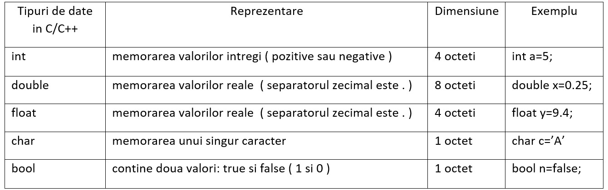

Limbajul C++ a fost inventat de către Bjarne Stroustrup în 1979, ca o extindere a limbajului C. Programul scris într-un limbaj de programare se numește program sursă și trebuie tradus într-un limbaj pe care îl înțelege procesorul, numit cod mașină, sau program executabil. Pentru anumite limbaje de programare operația de traducere se numește compilare (cazul lui C, C++, Pascal, etc.). Această operație este realizată de un compilator.
// primul program C++ ( acesta este un comentariu pe o linie )
#include <iostream>
using namespace std;
int main()
{
/* Acesta este un
comentariu de tip bloc
( pe mai multe linii )
*/
cout << "Hello world!" << endl;
cout << "Acesta este primul program in C++.";
return 0;
}
Etapele scrierii unui program în C++ sunt:
se obține fișierul sursă cu extensia .cpp
consta in verificarea corectitudini sintactice a programului ; se va obține astfel fișierul obiect, cu extensia .o sau .obj
se stabilesc legături între fișierele .obj; se va obține astfel programul executabil cu extensia .exe;
Pentru început, vom analiza componentele programului prezentat.
Liniile care încep cu # se numesc directive preprocesor.
Astfel, #include adaugă header-ul iostream
care permite operațiile de scriere și afișare.
Declararea funcției principale care este apelată mereu prima în momentul executiei programului.
Corpul funcției este delimitat de blocul de acolade. Între acolade se pot scrie anumite
instrucțiuni, fiecare fiind urmată de semnul ;.
Instrucțiunea ce realizează afișarea unui mesaj sau a unei variabile, urmată de un enter pentru a trece la următoarea linie (endl).
Instrucțiunea care marchează finalul executiei programului, valoarea 0 indicând terminarea cu succes.
Există două tipuri de comentarii:
Fiecarui caracter ii corespunde un cod ASCII ( un numar reprezentativ pentru caracterul propriu-zis). Aceste numere se afla in intervalul 0-127 si se impart in doua mari categorii:
literele mari: A ... Z
literele mici: a ... z
cifrele 0 .. 9
semnele de punctuaţie .,:;!?'"
caractere ce reprezintă operaţii aritmetice sau de alt tip: + - / * < > = (){}[]
alte caractere: ~`@#$%^&_\|, caracterul spaţiu (32)
Caracterele neimprimabile nu au o reprezentare grafică bine determinată, depinzand de sistemul de operare folosit.
Exemple:
caracterul cu codul 0, numit și caracter nul, notat în C++ cu '\0' ( finalul unui sir de caractere in memorie)
caracterul cu codul 10, numit Line Feed, notat în C++ cu '\n' (trecerea la rând nou la afiasrea pe ecran sau in fisier).

Exista de asemenea si tipuri de date derivate precum tablou, structura, clasa, enumerare.